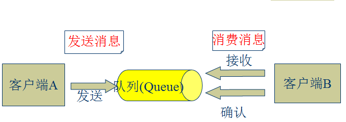
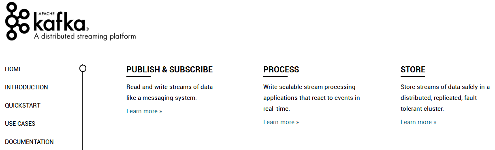
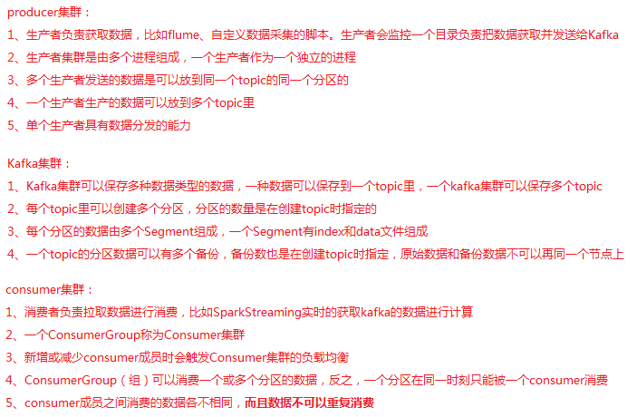
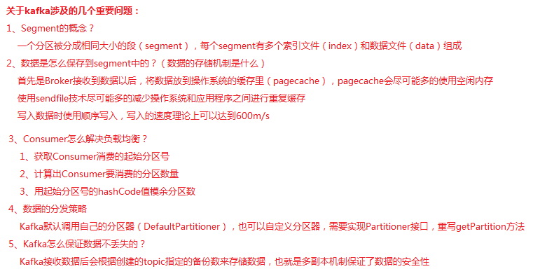

Kafka
回顾
1、SparkSQL开发流程
内容
1、JMS技术规范概述 2、Kafka概述 3、Kafka集群部署 4、Kafka常用操作命令 5、Kafka API练习
目标
1、了解JMS技术规范概述 2、了解Kafka的应用场景 3、掌握Kafka各组件的作用 4、掌握Kafka集群部署 5、熟悉Kafka API
第一节 JMS技术规范概述
1.1、JMS概念
JMS：是Java提供的一套技术规范。
JMS用途：用来异构系统集成通信，缓解系统瓶颈，提高系统的伸缩性增强系统用户体验，使得系统模块化和组件化变得可行并更加灵活。
实现方式：生产消费者模式（生产者、服务器、消费者）

1.2、JMS消息传输模型
点对点模式（一对一，消费者主动拉取数据，消息收到后消息清除） 点对点模型通常是一个基于拉取或者轮询的消息传送模型，这种模型从队列中请求信息，而不是将消息推送到客户端。这个模型的特点是发送到队列的消息被**一个且只有一个接收者接收处理，即使有多个消息监听者也是如此。 发布/订阅模式（一对多，数据生产后，推送给所有订阅者） 发布订阅模型则是一个基于推送的消息传送模型。发布订阅模型可以有多种不同的订阅者，临时订阅者只在主动监听主题时才接收消息，而持久订阅者则监听主题的所有消息，即当前订阅者不可用，处于离线状态。

1.3、JMS核心组件
Destination：消息发送的目的地，也就是前面说的Queue和Topic。 Message ：从字面上就可以看出是被发送的消息。 Producer： 消息的生产者，要发送一个消息，必须通过这个生产者来发送。 MessageConsumer： 与生产者相对应，这是消息的消费者或接收者，通过它来接收一个消息。
StreamMessage：Java 数据流消息，用标准流操作来顺序的填充和读取。 MapMessage：一个Map类型的消息，名称为 string 类型，而值为 Java 的基本类型。 TextMessage：普通字符串消息，包含一个String。 ObjectMessage：对象消息，包含一个可序列化的Java对象 BytesMessage：二进制数组消息，包含一个byte[]。 XMLMessage: 一个XML类型的消息。 最常用的是TextMessage和ObjectMessage。
1.4、常见的JMS消息服务器
JMS消息服务器 ActiveMQ 分布式消息中间件 Metamorphosis(MetaQ) 分布式消息中间件 RocketMQ
第二节 Kafka概述
2.1、Kafka概念
Kafka官网：http://kafka.apache.org

Apache Kafka是一个开源消息系统，由Scala写成。是由Apache软件基金会开发的一个开源消息系统项目。 Kafka最初是由LinkedIn开发，并于2011年初开源。2012年10月从ApacheIncubator毕业。该项目的目标是为处理实时数据提供一个统一、高吞吐量、低等待的平台。 Kafka是一个分布式消息队列：生产者、消费者的功能。它提供了类似于JMS的特性，但是在设计实现上完全不同，此外它并不是JMS规范的实现。 Kafka对消息保存时根据Topic进行归类，发送消息者称为Producer,消息接受者称为Consumer,此外Kafka集群有多个Kafka实例组成，每个实例(server)称为Broker。 无论是Kafka集群，还是Producer和Consumer都依赖于Zookeeper集群保存一些meta信息，来保证系统可用性。
2.2、Kafka核心组件
Producer：消息生产者，就是向kafka broker发消息的客户端。 Consumer：消息消费者，向kafka broker取消息的客户端 Topic ：我们可以理解为一个队列，消息根据Topic进行归类。 Consumer Group （CG）：这是kafka用来实现一个topic消息的广播（发给所有的consumer）和单播（发给任意一个consumer）的手段。一个topic可以有多个CG。topic的消息会复制（不是真的复制，是概念上的）到所有的CG，但每个partion只会把消息发给该CG中的一个consumer。如果需要实现广播，只要每个consumer有一个独立的CG就可以了。要实现单播只要所有的consumer在同一个CG。用CG还可以将consumer进行自由的分组而不需要多次发送消息到不同的topic。 Broker ：一台kafka服务器就是一个broker。一个集群由多个broker组成。一个broker可以容纳多个topic。 Partition：为了实现扩展性，一个非常大的topic可以分布到多个broker（即服务器）上，一个topic可以分为多个partition，每个partition是一个有序的队列。partition中的每条消息都会被分配一个有序的id（offset）。kafka只保证按一个partition中的顺序将消息发给consumer，不保证一个topic的整体（多个partition间）的顺序。 Offset：kafka的存储文件都是按照offset.kafka来命名，用offset做名字的好处是方便查找。例如你想找位于2049的位置，只要找到2048.kafka的文件即可。当然the first offset就是00000000000.kafka。
2.3、关于Kafka的几个问题


第三节 Kafka集群部署
3.1、下载安装包
http://kafka.apache.org/downloads
或者在linux中使用wget命令下载安装包
xxxxxxxxxxwget http://mirrors.hust.edu.cn/apache/kafka/1.1.0/kafka_2.11-1.1.0.tgz3.2、解压安装包
xxxxxxxxxxtar -zxvf/export/software/kafka_2.11-1.1.0.tgz -C /export/servers/ln -s kafka_2.11-1.1.0 kafka # 软链接3.3、修改配置文件
进入配置文件目录
xxxxxxxxxxcd /export/servers/kafka/config需要配置的文件有3个，具体配置信息在第5天目录中
producer.properties server.properties consumer.properties
3.4、分发安装包
xxxxxxxxxxscp -r/export/servers/kafka_2.11-1.1.0 kafka02:/export/servers然后分别在各机器上创建软链接
xxxxxxxxxxcd /export/servers/ln -s kafka_2.11-1.1.0 kafka3.5、再次修改各节点配置文件
依次修改每个节点的server.properties中的broker.id和host.name
3.6、启动集群
依次在每个节点启动
xxxxxxxxxxnohup bin/kafka-server-start.sh config/server.properties &第四节 Kafka常用操作命令
查看当前服务器中的所有topic
xxxxxxxxxxbin/kafka-topics.sh --list --zookeeper node01:2181创建topic
xxxxxxxxxxbin/kafka-topics.sh --create --zookeeper node01:2181 --replication-factor 1 --partitions 1 --topic test删除topic
xxxxxxxxxxbin/kafka-topics.sh --delete --zookeeper node01:2181 --topic test需要server.properties中设置delete.topic.enable=true否则只是标记删除或者直接重启。 通过shell命令发送消息
xxxxxxxxxxbin/kafka-console-producer.sh --broker-list node01:9092 --topic test1通过shell消费消息
xxxxxxxxxxbin/kafka-console-consumer.sh --zookeeper node01:2181 --from-beginning --topic test1查看消费位置
xxxxxxxxxxbin/kafka-run-class.sh kafka.tools.ConsumerOffsetChecker --zookeeper node01:2181 --group testGroup查看某个Topic的详情
x
bin/kafka-topics.sh --topic test --describe --zookeeper node01:2181对分区数进行修改
xxxxxxxxxxbin/kafka-topics.sh --zookeeper node01 --alter --partitions 15 --topic utopic第五节 Kafka API练习
Producer API
xxxxxxxxxx/** * 实现一个Producer来不断的生产数据 * 1、能够发送数据到Kafka集群指定topic * 2、实现自定义分区器 */object KafkaProducerTest { def main(args: Array[String]): Unit = { // 定义topic，把数据传到该topic val topic = "KafkaSimple" // 创建一个配置文件信息类 val props: Properties = new Properties() // 数据在序列化时的编码类型 props.put("serializer.class", "kafka.serializer.StringEncoder") // kafka集群列表 props.put("metadata.broker.list", "node01:9092,node02:9092,node03:9092") // 设置发送数据后是否需要服务端的反馈：0，1，-1 props.put("request.required.acks", "1") // 调用分区器 props.put("partitioner.class", "com.qf.gp1701.sparktest.day12.CustomPartitioner")// props.put("partitioner.class", "kafka.producer.DefaultPartitioner") val config = new ProducerConfig(props) // 创建一个生产者实例 val producer: Producer[String, String] = new Producer(config) // 模拟生产一些数据 for (i <- 1 to 10000){ val msg = s"$i: Producer send data" producer.send(new KeyedMessage[String, String](topic, msg)) } }}自定义分区器
xxxxxxxxxxclass CustomPartitioner(props: VerifiableProperties) extends Partitioner{ override def partition(key: Any, numPartitions: Int): Int = { key.hashCode() % numPartitions }}Consumer API
xxxxxxxxxxclass KafkaConsumerTest(val consumer: String, val stream: KafkaStream[Array[Byte], Array[Byte]]) extends Runnable{ override def run() = { val it: ConsumerIterator[Array[Byte], Array[Byte]] = stream.iterator() while(it.hasNext()){ val data: MessageAndMetadata[Array[Byte], Array[Byte]] = it.next() val topic: String = data.topic val partition: Int = data.partition val offset: Long = data.offset val msg: String = new String(data.message()) println(s"Consumer: $consumer, Topic: $topic, Partition: $partition, Offset: $offset, msg: $msg") } }}object KafkaConsumerTest{ def main(args: Array[String]): Unit = { // 定义用来读取数据的topic val topic = "KafkaSimple" // 用来存储多个topic val topics = new mutable.HashMap[String, Int]() topics.put(topic, 2) // 配置文件信息 val props = new Properties() // ConsumerGroup id props.put("group.id", "group4") // 指定zookeeper的地址列表, 注意：value里不要有空格 props.put("zookeeper.connect", "node01:2181,node02:2181,node03:2181") // 如果zookeeper没有offset值或者offset值超出范围，需要指定一个初始的offset props.put("auto.offset.reset", "smallest") // 把配置信息封装到ConsumerConfig对象里 val config = new ConsumerConfig(props) // 创建Consumer实例，如果没有数据，会一直线程等待 val consumer: ConsumerConnector = Consumer.create(config) // 根据所传的topics来获取数据,得到一个stream流 val streams: collection.Map[String, List[KafkaStream[Array[Byte], Array[Byte]]]] = consumer.createMessageStreams(topics) // 获取指定topic的数据 val stream: Option[List[KafkaStream[Array[Byte], Array[Byte]]]] = streams.get(topic) // 创建一个固定大小的线程池 val pool: ExecutorService = Executors.newFixedThreadPool(3) for (i <- 0 until stream.size){ pool.execute(new KafkaConsumerTest(s"Consumer: $i", stream.get(i))) } }}附件
总结
1、Kafka集群配置 2、Kafka API
作业
1、搭建Kafka集群 2、模拟生产者把数据存入Kafka 3、模拟消费者从Kafka读取数据 4、Kafka API练习
面试题
1、Kafka的存储机制 2、怎样提高Kafka的吞吐量 3、怎样做到数据的全局有序 4、解释Kafka的负载均衡 5、Kafka是怎样查找数据的